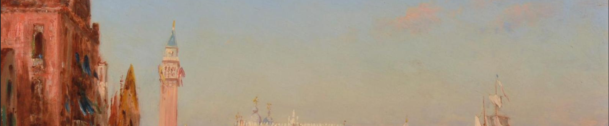

Dans le corpus anglais, nous pouvons constater que le terme anglais s'attache d'une valeur politique. Plus précisément, le mot apparaît fréquemment dans les articles de presse qui ont pour sujet différents types de réfugiés et leurs situations.
Par rapport aux termes français et chinois, en mettant l'accent sur le sens de l'expulsion, les contextes anglais peuvent être principalement divisés en trois parties :
Premièrement, ce sont les actualités sur les réfugiés de toutes sortes. Les actualités focalisent sur les dépaysements d'une grande majorité de personnes à cause des guerres ou du changement de climat de leur pays natal. C'est également dans cette partie où les journalistes font couler le plus de l'encre, afin de titrer l'attention de la société sur ces gens en détresse.
Le deuxième type de contexte porte sur les affaires politiques. Certains médias, comme CNN, accordent beaucoup d'attention aux coups d'État et aux administratives qui sont imposés au dépaysement après leur échec sur la scène politique.
Finalement, il y a des articles ou des mémoires dont l'auteur raconte son histoire de voyage, dans laquelle le sens du terme anglais se rapproche du mot français "dépaysement".